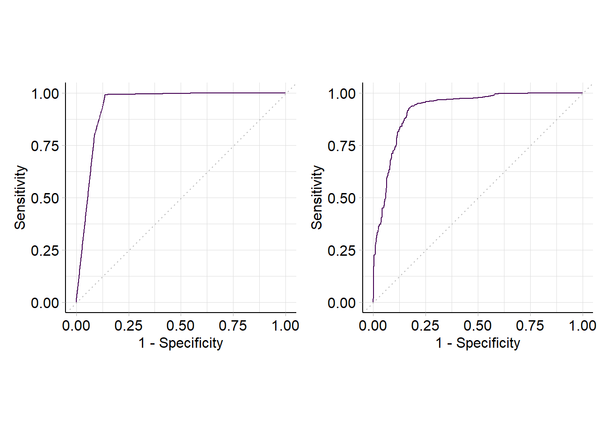
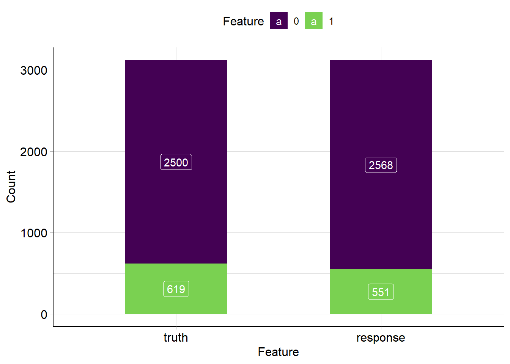

第 3 章 员工离职分析
3.1 描述性分析
3.1.1 数据概览
hr <- read.csv("data/HR_comma_sep.csv")
summary(hr)## satisfaction_level last_evaluation number_project
## Min. :0.0900 Min. :0.3600 Min. :2.000
## 1st Qu.:0.4400 1st Qu.:0.5600 1st Qu.:3.000
## Median :0.6400 Median :0.7200 Median :4.000
## Mean :0.6128 Mean :0.7161 Mean :3.803
## 3rd Qu.:0.8200 3rd Qu.:0.8700 3rd Qu.:5.000
## Max. :1.0000 Max. :1.0000 Max. :7.000
## average_montly_hours time_spend_company Work_accident
## Min. : 96.0 Min. : 2.000 Min. :0.0000
## 1st Qu.:156.0 1st Qu.: 3.000 1st Qu.:0.0000
## Median :200.0 Median : 3.000 Median :0.0000
## Mean :201.1 Mean : 3.498 Mean :0.1446
## 3rd Qu.:245.0 3rd Qu.: 4.000 3rd Qu.:0.0000
## Max. :310.0 Max. :10.000 Max. :1.0000
## left promotion_last_5years sales
## Min. :0.0000 Min. :0.00000 Length:14999
## 1st Qu.:0.0000 1st Qu.:0.00000 Class :character
## Median :0.0000 Median :0.00000 Mode :character
## Mean :0.2381 Mean :0.02127
## 3rd Qu.:0.0000 3rd Qu.:0.00000
## Max. :1.0000 Max. :1.00000
## salary
## Length:14999
## Class :character
## Mode :character
##
##
## 观察各个变量的主要描述统计量，可知：
- 离职率（
left）平均将近24%。 - 对公司的满意度（
satisfaction_level）仅有62%左右。 - 平均每个人参加过的项目数（
number_project）仅为3~4个。 - 员工每月平均工作时间（
average_montly_hours）达到201.1小时，按照每月工作20天（去除8天双休）计算，每个员工平均每天工作超过10小时。
3.1.2 员工离职情况与员工满意度、月均工作时间、绩效评估和在职年限的关系
我们通过绘图观察离职员工的特点。
hr$left <- factor(hr$left, levels = c("0", "1"))
# 离职率与公司满意度关系
boxSat <- ggplot(hr, aes(x = left, y = satisfaction_level,
fill = left)) +
geom_boxplot() +
theme_bw() +
labs(x = "离职情况", y = "员工满意度") +
guides(fill = guide_legend(title = "离职情况"))
# 离职率与绩效评估的关系
boxEva <- ggplot(hr, aes(x = left, y = last_evaluation,
fill = left)) +
geom_boxplot() +
theme_bw() +
labs(x = "离职情况", y = "绩效评估") +
guides(fill = guide_legend(title = "离职情况"))
# 离职率与月均工作时间的关系
boxMonth <- ggplot(hr, aes(x = left, y = average_montly_hours, fill = left)) +
geom_boxplot() +
theme_bw()+
labs(x = "离职率", y = "月均工作时间") +
guides(fill = guide_legend(title = "离职情况"))
# 离职率与工作年限的关系
boxTime <- ggplot(hr, aes(x = left, y = time_spend_company, fill = left)) +
geom_boxplot() +
theme_bw() +
labs(x = "离职率", y = "在职年限") +
guides(fill = guide_legend(title = "离职情况"))
boxSat/boxEva |boxMonth/boxTime图 3.1: 员工离职情况与员工满意度、月均工作时间、绩效评估和在职年限的关系。
由图3.1可以看出，离职员工的几个特点：
- 左上图：离职员工的满意度明显低于未离职的满意度，大都集中于0.4左右。
- 左下图：离职员工的绩效评估较高。推测离职员工倾向于寻找待遇更好的工作。
- 右上图：离职员工的月均工作时长较高，大部分超过了平均水平（200小时）。
- 右下图：工作年限均在4年左右。
3.1.3 员工离职情况与项目参与个数、五年内升职情况和薪资的关系
hr$number_project <- factor(hr$number_project,
levels = c("2", "3", "4", "5", "6", "7"))
# 离职与参与项目数关系
barProject <- ggplot(hr, aes(x = number_project, fill = left)) +
geom_bar(position = "fill") + # fill为百分比条形图
theme_bw() +
labs(x = "参与项目数", y = "比例") +
guides(fill = guide_legend(title = "离职情况"))
# 离职与升职情况关系
hr$promotion_last_5years[hr$promotion_last_5years == 1] <- "已升职"
hr$promotion_last_5years[hr$promotion_last_5years == 0] <- "未升职"
bar5years <- ggplot(hr, aes(x = as.factor(promotion_last_5years), fill = left)) +
geom_bar(position = "fill") +
theme_bw() +
labs(x = "5年内升职情况", y = "比例") +
theme(axis.text.x = element_text(angle = 45,
hjust = 1)) +
guides(fill = guide_legend(title = "离职情况"))
# 离职与薪资关系
barSalary <- ggplot(hr, aes(x = factor(salary, levels = c("low", "medium", "high"), ordered=TRUE), fill = left)) +
geom_bar(position = "fill") +
theme_bw() +
labs(x = "薪资情况", y = "比例") +
theme(axis.text.x = element_text(angle = 45,
hjust = 1)) +
guides(fill = guide_legend(title = "离职情况"))
barProject|bar5years |barSalary图 3.2: 员工离职情况与项目参与个数、五年内升职情况和薪资的关系。
由图3.2可以看出，离职员工的几个特点：
- 参与项目过少（2个）与过多（7个）的员工离职率均比较高。且参与项目在3个及以上时，参与项目越多，离职率越高。
- 5年内未升职的员工离职率较高。
- 薪资越低，离职率越高。
3.2 建模预测1-回归树+混淆矩阵
建模的思路：
提取所需数据。
定义交叉验证方法。
进行分层抽样，提取出想要的训练集和测试集。
实际建模。
对数据进行预测（利用混淆矩阵的方式）。
3.2.1 提取数据
选择符合条件的样本。通过绩效评估、在职时间和参与项目数筛选出更有代表性的样本数据进行分析。 按照绩效评估、在职时间、参与项目数量
hr_model <- hr %>%
filter(last_evaluation >= 0.70 |
time_spend_company>=4 |
number_project>=5)3.2.2 确定交叉验证方法
# cv为设置交叉验证方法，number = 5为5折交叉验证。
train_control <- trainControl(method = "cv",
number = 5)3.2.3 分层抽样 2
# 设定随机种子，确保每次抽样结果一致。
set.seed(1234)
# 根据数据因变量进行7:3的分层抽样，返回行索引向量 p = 0.7为按照7：3进行抽样
# 参数list表示返回值是否为列表
index <- createDataPartition(hr_model$left,
p = 0.7, list = F)
# 以index为索引的数据为训练集
# 剩余的数据为测试集
trainData <- hr_model[index, ]
testData <- hr_model[-index, ]3.2.4 实际建模
使用carte包中的train函数对训练集进行5折交叉验证建立回归树模型。
# left~. 代表因变量left与所有自变量进行建模。
rpartmodel <- train(left~., data = trainData,
trControl = train_control,
method = "rpart")利用建立好的模型rpartmodel对测试集进行预测。
# testdata[-7]剔除left列。
predRpart <- predict(rpartmodel, testData[-7])建立混淆矩阵，验证建立的模型。
conPart <- table(predRpart, testData$left)
conPart##
## predRpart 0 1
## 0 2246 72
## 1 51 528混淆矩阵：混淆矩阵的每一列代表了预测类别，每一列的总数表示预测为该类别的数据的数目；每一行代表了数据的真实归属类别，每一行的数据总数表示该类别的数据实例的数目。根据查全率和查准率两个参数判断模型拟合结果是否够好。
混淆矩阵的查准率和查全率是两个重要的参数，具体计算公式如下式(3.1)：
\[\begin{align} 查准率=\frac{真正例}{真正例+假正例} \\ 查全率=\frac{真正例}{真正例+假反例} \tag{3.1} \end{align}\]
根据混淆矩阵结果，可以得到回归树模型的：
查准率为91.19 %。
查全率为88 %。
回归模型的拟合效果不错。
3.3 建模预测2-朴素贝叶斯
建模步骤与第3.2小结基本相同，下面只列出代码及结果。
nbModel <- train(left~., data = trainData,
trControl = train_control,
method = "nb")
predNb <- predict(nbModel, testData[-7])
conNb <- table(predNb, testData$left)
conNb##
## predNb 0 1
## 0 2248 146
## 1 49 454根据公式(3.1)，计算得到朴素贝叶斯模型的：
查准率为90.26 %。
查全率为75.67 %。
通过两种模型的评估，我们发现回归树模型的拟合度比朴素贝叶斯更好，所以接下来我们采用回归数模型进行进一步分析。
3.4 模型评估及应用
本部分使用
ROC曲线的方法对模型进行评估。具体步骤如下：- 根据建模预测的结果对样例进行排序。
- 按照排序逐个把样本作为正例进行预测，每次计算出两个重要的值（分别为假正例率和真正例率，具体计算公式见下式(3.2)。
\[\begin{align} 假正例率 = \frac{假正例}{假正例+真反例} \\ 真正例率 = \frac{真正例}{真正例+假反例}(查全率) \tag{3.2} \end{align}\]
- 分别以计算的两个值作为横纵坐标，就得到了
ROC曲线。
ROC曲线的评估方法：- 如果一个模型的
ROC曲线被另一个模型的ROC曲线完全“包住”，说明后者的性能优于前者。 - 如果两个
ROC曲线发生交叉，则难以一般性的断言两者的优劣。如果一定要进行比较，较为合理的判断依据是比较ROC曲线下的面积（AUC）。一般情况下，如果
- 如果一个模型的
3.4.1 ROC曲线绘制
绘制ROC曲线的数据必须是数值型。
predRpart <- as.numeric(as.character(predRpart))
predNb <- as.numeric(predNb)转换后绘制图形。
# 获取后续绘图使用的信息
rocPart <- roc(testData$left, predRpart)
# 计算两个关键值
# 假正例率
specificityRp <- rocPart$specificities
# 查全率，即真正利率
sensitivityRp <- rocPart$sensitivities# 获取后续绘图使用的信息
rocNb <- roc(testData$left, predNb)
# 计算两个关键值
# 假正例率
specificityNb <- rocNb$specificities
# 查全率，即真正利率
sensitivityNb <- rocNb$sensitivities绘制ROC图形。
# 定义data = NULL声明未用任何数据
pRpart <- ggplot(data = NULL, aes(
x = 1 - specificityRp,
y = sensitivityRp)) +
geom_line(color = "red") +
geom_abline() +
annotate("text", x = 0.4, y = 0.5,
label = paste("AUC = ",
round(rocPart$auc, 3))) +
theme_bw() +
labs(x = "1 - Specificity", y = "Sensitivities")
pNb <- ggplot(data = NULL, aes(
x = 1 - specificityNb,
y = sensitivityNb)) +
geom_line(color = "red") +
geom_abline() +
annotate("text", x = 0.4, y = 0.5,
label = paste("AUC = ",
round(rocNb$auc, 3))) +
theme_bw() +
labs(x = "1 - Specificity", y = " ")
pRpart|pNb
图 3.3: 回归树模型和朴素贝叶斯模型ROC曲线
(ref:fig-ROC)
从AUC值来看，同样是回归树模型的拟合效果好于朴素贝叶斯模型。
3.5 模型应用
使用回归树模型预测分类的概率，绘制交互预测表
# type = "prob"表示结果显示为概率
# predEnd <- predict(rpartmodel, testData[-7],
# type = "prob")
# 合并预测结果及概率
# dataEnd <- cbind(round(predEnd, 3), predRpart)
# 重命名预测结果表列名。
# names(dataEnd) <- c("pred.0", "pred.1", "pred")
# head(dataEnd)
# 生成交互式表格
# datatable(dataEnd)3.6 mlr3建模
3.6.1 回归树模型
library(mlr3verse)- 建立任务
hr <- read.csv("data/HR_comma_sep.csv")
hr$left <- factor(hr$left)
hr$salary <- factor(hr$salary)
hr$sales <- factor(hr$sales)
hr_model <- hr_model <- hr %>%
filter(last_evaluation >= 0.70 |
time_spend_company>=4 |
number_project>=5)
task_hr <-
TaskClassif$new(id = "left", backend = hr_model,
target = "left")
task_hr## <TaskClassif:left> (10394 x 10)
## * Target: left
## * Properties: twoclass
## * Features (9):
## - int (5): Work_accident, average_montly_hours,
## number_project, promotion_last_5years, time_spend_company
## - dbl (2): last_evaluation, satisfaction_level
## - fct (2): salary, sales- 定义学习器
learner_rpart <- lrn("classif.rpart",
predict_type = "prob")- 基础训练+预测
set.seed(1234)
# 划分训练集和测试集
train_set <- sample(task_hr$nrow, 0.7 * task_hr$nrow)
test_set <- setdiff(seq_len(task_hr$nrow), train_set)
# 训练模型
learner_rpart$train(task_hr, row_ids = train_set)
# 数据预测
prediction_rpart <- learner_rpart$predict(task_hr,
row_ids = test_set)
# 建立混淆矩阵
prediction_rpart$confusion## truth
## response 0 1
## 0 2483 85
## 1 17 534# 评估模型准确性
measure_rpart <- msr("classif.acc")
prediction_rpart$score(measure_rpart)## classif.acc
## 0.9672972- 重采样
# 自动重采样
## 定义重采样方法:5折交叉
resampling_rpart <- rsmp("cv", folds = 5L)
## 应用重采样方法
rr_rpart <- resample(task_hr, learner_rpart, resampling_rpart)## INFO [11:22:19.733] [mlr3] Applying learner 'classif.rpart' on task 'left' (iter 1/5)
## INFO [11:22:19.802] [mlr3] Applying learner 'classif.rpart' on task 'left' (iter 3/5)
## INFO [11:22:19.850] [mlr3] Applying learner 'classif.rpart' on task 'left' (iter 5/5)
## INFO [11:22:19.889] [mlr3] Applying learner 'classif.rpart' on task 'left' (iter 2/5)
## INFO [11:22:19.930] [mlr3] Applying learner 'classif.rpart' on task 'left' (iter 4/5)## 每次重采样建模评分
rr_rpart$score(measure_rpart)## task task_id learner learner_id
## 1: <TaskClassif[50]> left <LearnerClassifRpart[38]> classif.rpart
## 2: <TaskClassif[50]> left <LearnerClassifRpart[38]> classif.rpart
## 3: <TaskClassif[50]> left <LearnerClassifRpart[38]> classif.rpart
## 4: <TaskClassif[50]> left <LearnerClassifRpart[38]> classif.rpart
## 5: <TaskClassif[50]> left <LearnerClassifRpart[38]> classif.rpart
## resampling resampling_id iteration
## 1: <ResamplingCV[20]> cv 1
## 2: <ResamplingCV[20]> cv 2
## 3: <ResamplingCV[20]> cv 3
## 4: <ResamplingCV[20]> cv 4
## 5: <ResamplingCV[20]> cv 5
## prediction classif.acc
## 1: <PredictionClassif[20]> 0.9639250
## 2: <PredictionClassif[20]> 0.9735450
## 3: <PredictionClassif[20]> 0.9610390
## 4: <PredictionClassif[20]> 0.9672920
## 5: <PredictionClassif[20]> 0.9682387## 将重采样的模型进行聚合并评分
rr_rpart$aggregate(measure_rpart)## classif.acc
## 0.9668079得到的回归树模型最终的拟合准确率为96.75%，拟合效果不错
3.6.2 朴素贝叶斯模型
- 建立任务
hr <- read.csv("data/HR_comma_sep.csv")
hr$left <- factor(hr$left)
hr$salary <- factor(hr$salary)
hr$sales <- factor(hr$sales)
hr_model <- hr_model <- hr %>%
filter(last_evaluation >= 0.70 |
time_spend_company>=4 |
number_project>=5)
task_hr_nb <-
TaskClassif$new(id = "left", backend = hr_model,
target = "left")
task_hr_nb## <TaskClassif:left> (10394 x 10)
## * Target: left
## * Properties: twoclass
## * Features (9):
## - int (5): Work_accident, average_montly_hours,
## number_project, promotion_last_5years, time_spend_company
## - dbl (2): last_evaluation, satisfaction_level
## - fct (2): salary, sales- 选择学习器
learner_nb <- lrn("classif.naive_bayes",
predict_type = "prob")- 划分训练集和测试集
set.seed(1234)
train_set <- sample(task_hr_nb$nrow, task_hr_nb$nrow * 0.7)
test_set <- setdiff(seq_len(task_hr_nb$nrow), train_set)- 模型训练和预测
# 模型训练
learner_nb$train(task_hr_nb, row_ids = train_set)
learner_nb$model # 查看训练好的模型##
## Naive Bayes Classifier for Discrete Predictors
##
## Call:
## naiveBayes.default(x = x, y = y)
##
## A-priori probabilities:
## y
## 0 1
## 0.8074227 0.1925773
##
## Conditional probabilities:
## Work_accident
## y [,1] [,2]
## 0 0.1813075 0.3853055
## 1 0.0442541 0.2057326
##
## average_montly_hours
## y [,1] [,2]
## 0 201.0504 45.49460
## 1 254.7744 34.45457
##
## last_evaluation
## y [,1] [,2]
## 0 0.7657457 0.1552908
## 1 0.8763241 0.1013923
##
## number_project
## y [,1] [,2]
## 0 3.959993 1.023111
## 1 5.244825 1.156665
##
## promotion_last_5years
## y [,1] [,2]
## 0 0.028770855 0.16717611
## 1 0.002141328 0.04624142
##
## salary
## y high low medium
## 0 0.10316650 0.44722506 0.44960844
## 1 0.01641685 0.60314061 0.38044254
##
## sales
## y accounting hr IT management marketing
## 0 0.04902962 0.04324140 0.08614232 0.04971059 0.05498808
## 1 0.05424697 0.04782298 0.07994290 0.02997859 0.04710921
## sales
## y product_mng RandD sales support technical
## 0 0.06179775 0.05720123 0.27221655 0.15253660 0.17313585
## 1 0.05353319 0.03783012 0.26766595 0.15488936 0.22698073
##
## satisfaction_level
## y [,1] [,2]
## 0 0.6622302 0.2274002
## 1 0.4660742 0.3465198
##
## time_spend_company
## y [,1] [,2]
## 0 3.654069 1.6892539
## 1 4.559600 0.7978871# 模型预测
prediction_nb <- learner_nb$predict(task_hr_nb, row_ids = test_set)
prediction_nb # 查看预测结果## <PredictionClassif> for 3119 observations:
## row_ids truth response prob.0 prob.1
## 2 1 1 0.0002953563 0.9997046
## 3 1 1 0.1080414241 0.8919586
## 4 1 1 0.0031520108 0.9968480
## ---
## 10388 1 1 0.0423579034 0.9576421
## 10390 1 0 0.5807408182 0.4192592
## 10392 1 1 0.0014815943 0.9985184- 模型评估
prediction_nb$confusion## truth
## response 0 1
## 0 2243 100
## 1 257 519measure_nb <- msr("classif.acc")
prediction_nb$score(measure_nb) # 预测精度## classif.acc
## 0.8855402- 重采样
resampling_nb <- rsmp("cv", folds = 5L)
rr_nb <- resample(task_hr_nb, learner_nb, resampling_nb)## INFO [11:22:20.939] [mlr3] Applying learner 'classif.naive_bayes' on task 'left' (iter 1/5)
## INFO [11:22:21.325] [mlr3] Applying learner 'classif.naive_bayes' on task 'left' (iter 3/5)
## INFO [11:22:21.664] [mlr3] Applying learner 'classif.naive_bayes' on task 'left' (iter 5/5)
## INFO [11:22:21.993] [mlr3] Applying learner 'classif.naive_bayes' on task 'left' (iter 2/5)
## INFO [11:22:22.325] [mlr3] Applying learner 'classif.naive_bayes' on task 'left' (iter 4/5)rr_nb$score(measure_nb)## task task_id learner
## 1: <TaskClassif[50]> left <LearnerClassifNaiveBayes[36]>
## 2: <TaskClassif[50]> left <LearnerClassifNaiveBayes[36]>
## 3: <TaskClassif[50]> left <LearnerClassifNaiveBayes[36]>
## 4: <TaskClassif[50]> left <LearnerClassifNaiveBayes[36]>
## 5: <TaskClassif[50]> left <LearnerClassifNaiveBayes[36]>
## learner_id resampling resampling_id iteration
## 1: classif.naive_bayes <ResamplingCV[20]> cv 1
## 2: classif.naive_bayes <ResamplingCV[20]> cv 2
## 3: classif.naive_bayes <ResamplingCV[20]> cv 3
## 4: classif.naive_bayes <ResamplingCV[20]> cv 4
## 5: classif.naive_bayes <ResamplingCV[20]> cv 5
## prediction classif.acc
## 1: <PredictionClassif[20]> 0.8840789
## 2: <PredictionClassif[20]> 0.8951419
## 3: <PredictionClassif[20]> 0.8946609
## 4: <PredictionClassif[20]> 0.8869649
## 5: <PredictionClassif[20]> 0.8695861rr_nb$aggregate(measure_nb)## classif.acc
## 0.8860865通过两种模型的评估，我们发现回归树模型的拟合度比朴素贝叶斯更好，与传统方法得出的结论一致。
3.6.3 利用mlr3进行ROC曲线绘制
library(mlr3viz)
roc_nb <- autoplot(prediction_nb, type = "roc")
roc_rpart <- autoplot(prediction_rpart, type = "roc")
roc_rpart|roc_nb ### 模型应用
使用回归树模型预测分类概率，绘制表格交互表
autoplot(prediction_rpart)
# type = "prob"表示结果显示为概率
predEnd <- predict(rpartmodel, testData[-7],
type = "prob")
# 合并预测结果及概率
dataEnd <- cbind(round(predEnd, 3), predRpart)
# 重命名预测结果表列名。
names(dataEnd) <- c("pred.0", "pred.1", "pred")
# head(dataEnd)
# 生成交互式表格
# datatable(dataEnd)分层抽样法也叫类型抽样法。它是从一个可以分成不同子总体（或称为层）的总体中，按规定的比例从不同层中随机抽取样品（个体）的方法。这种方法的优点是，样本的代表性比较好，抽样误差比较小。缺点是抽样手续较简单随机抽样还要繁杂些。定量调查中的分层抽样是一种卓越的概率抽样方式，在调查中经常被使用。↩︎